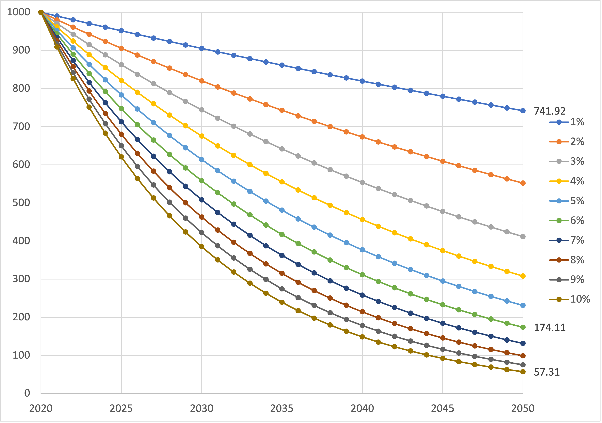
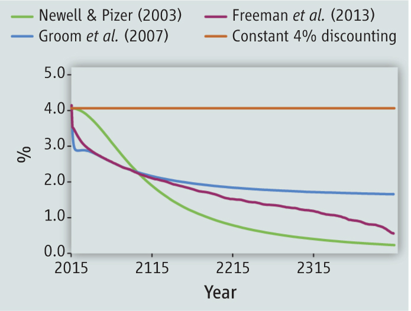
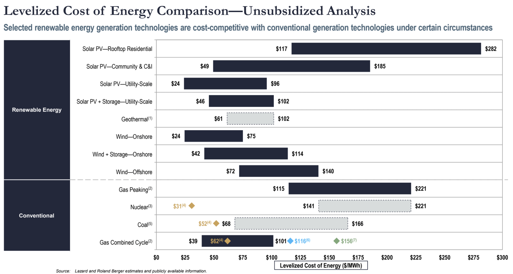
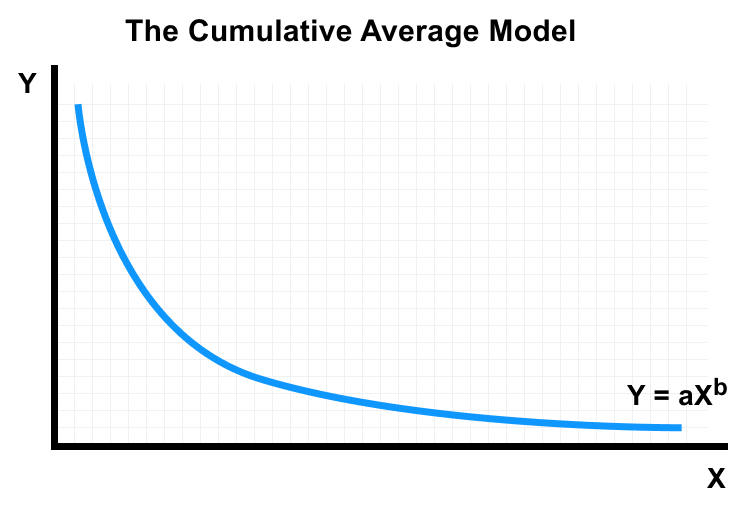
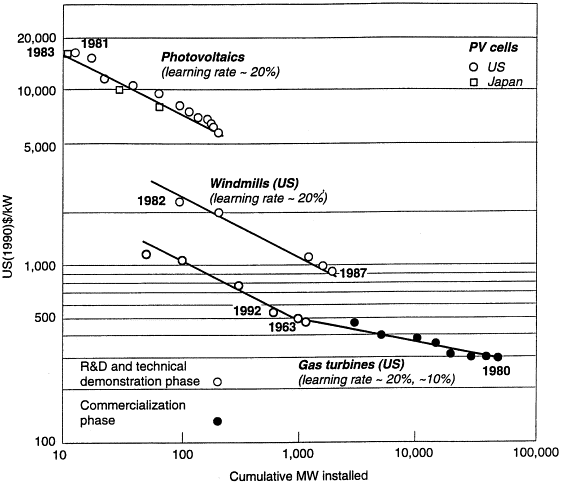
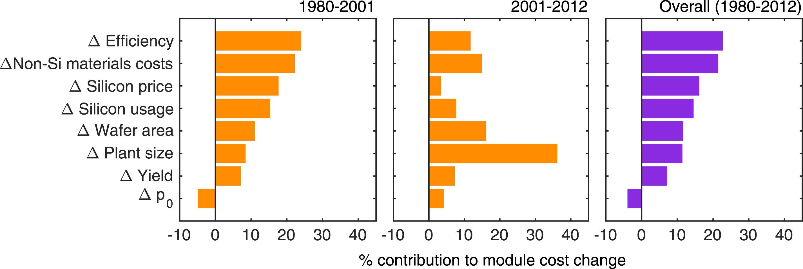
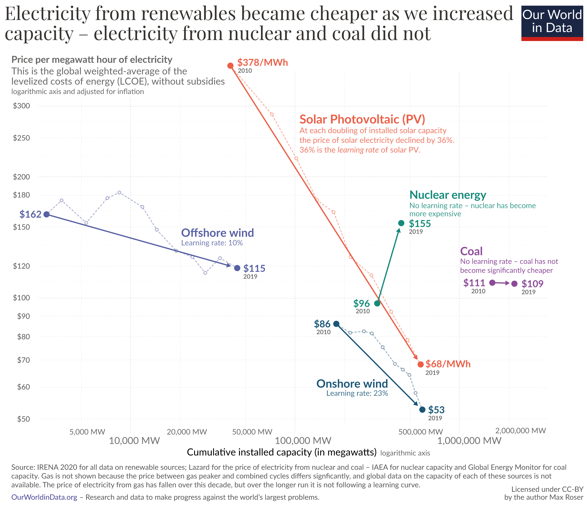
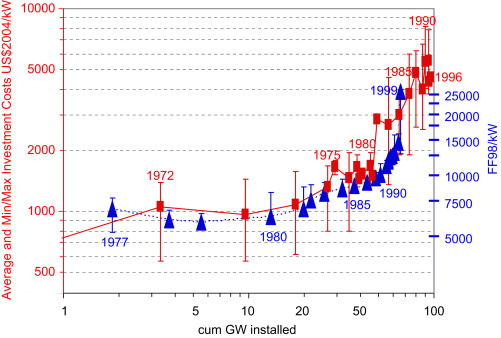
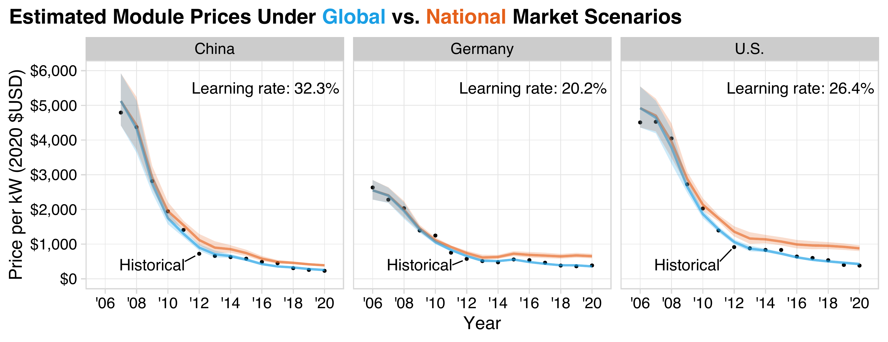

Lecture 8 Energy Project Economics
Sample analytic questions
- What’s the LCOE of a new technology?
- When to retire a nuclear/coal power plant?
- Should I install rooftop solar or buy an EV?
- How long should the government subsidies heatpump?
- When can offshore wind achieve grid parity?
Project economics
- Simple payback
- Discounting
- Present/future value
- Uniform payments (annuities)
- Capital recovery factor
- Comparing technologies/costs (LCOE)
- Learning curve
- Market and technology drivers
Time is money
- Money value changes in time: a dollar today worth more than a dollar tomorrow.
- When money is invested, its amount changes with the return.
- When money is transferred into assets, its value change due to depreciation and/or inflation.
- Discounted cash flow is a technique that allow us to evaluate values as they change over time.
Payback period
Simple payback: no discounting
Payback: with discounting
Capital Recovery Factor (CRF)
Ratio of a constant annunity to the present value of receiving that annuity for a given length of time.
Discounting
The power of discounting

Declining discounting

LCOE
I: Investment costs
M: Operation and maintaince costs
F: Fuel costs
Comparing LCOE

Limitations of LCOE
- Fossil: Do not include other costs (e.g. enviromental, carbon, etc.)
- RE: Do not include integraton costs
- Focus on economics, do not include social cultural acceptance
Learning curve

Empircial relations between unit costs and cumulative production.
\(Y = aX^b\)
\(Pr=2^{b}\)
\(Lr=1-Pr=1-2^{b}\)
Y: Unit costs
a: Cost of first unit
X: Units
b: Slope of the learning curve
Pr: Progress ratio
Lr: Learing rate
Learning of differrent technologies

Drivers of learning

Source of learning
Learning by doing
- Economy of scale
- Economy of scope
Learning by researching
How renewables are getting cheap

Why nuclear costs are going up?

Role of global supply chain in PV

Summary
- Project economics is useful for basic cost-benefit analysis
- Getting the price (discounting) right
- Understanding technology dynamics will help to model future projections
- Aware of the limitations
References
Arrow, K., M. Cropper, C. Gollier, B. Groom, G. Heal, R. Newell, W. Nordhaus, et al. 2013. “Determining Benefits and Costs for Future Generations.” Science 341 (6144): 349–50. https://doi.org/10.1126/science.1235665.
Grubler, Arnulf. 2010. “The Costs of the French Nuclear Scale-up: A Case of Negative Learning by Doing.” Energy Policy 38 (9): 5174–88. https://doi.org/10.1016/j.enpol.2010.05.003.
Grübler, Arnulf, Nebojša Nakićenović, and David G Victor. 1999. “Dynamics of Energy Technologies and Global Change.” Energy Policy 27 (5): 247–80. https://doi.org/10.1016/S0301-4215(98)00067-6.
Helveston, John, Gang He, and Michael Davidson. 2022. “Quantifying the Cost Savings of Global Solar Photovoltaic Supply Chains.” Nature 612 (7938): 83–87. https://doi.org/10.1038/s41586-022-05316-6.
Kavlak, Goksin, James McNerney, and Jessika E. Trancik. 2018. “Evaluating the Causes of Cost Reduction in Photovoltaic Modules.” Energy Policy 123 (December): 700–710. https://doi.org/10.1016/j.enpol.2018.08.015.
Weitzman, Martin L. 2001. “Gamma Discounting.” American Economic Review 91 (1): 260–71. https://www.aeaweb.org/articles?id=10.1257/aer.91.1.260.
Yelle, Louis E. 1979. “The Learning Curve: Historical Review and Comprehensive Survey.” Decision Sciences 10 (2): 302–28. https://doi.org/10.1111/j.1540-5915.1979.tb00026.x.